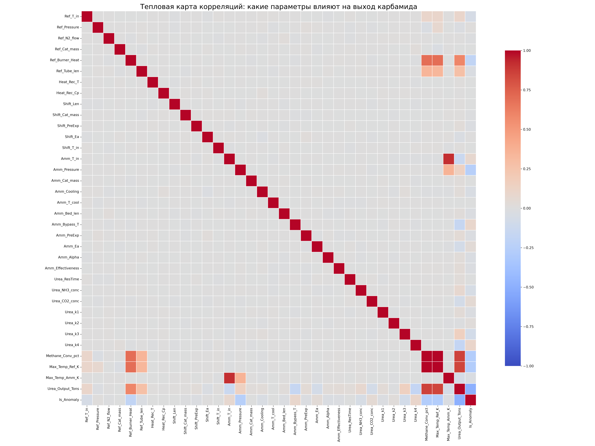
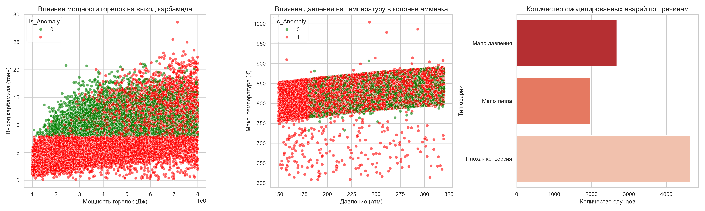

Итоговый отчет
Цифровой двойник производства карбамида
Разработка физико математической модели цепочки поставок для прогнозирования рыночной надбавки на основе машинного обучения
1. Архитектура цифрового двойника
Модель разбита на последовательные блоки. Выход одного блока является входом для следующего. Управление всеми процессами происходит через единую панель управления (словарь PLANT_SETTINGS), что позволяет имитировать любые режимы работы завода.
Блок 1. Риформинг
Трубчатая печь
Моделируется паровая конверсия метана в трубчатом реакторе (PFR). Используется кинетика Лэнгмюра Хиншельвуда (Xu and Froment, 1989). Учитывается подвод тепла от горелок и эндотермический эффект реакции.
k = A * exp( -Ea / (R * T) )
dT/dz = (Q_горелок - Q_реакции) / (F_total * Cp)
Блок 2. Конверсия CO
Реактор сдвига
Газ охлаждается в котле утилизаторе и поступает в реактор конверсии угарного газа (PFR). Модель учитывает термодинамическое равновесие реакции сдвига водяного газа для очистки от CO и получения дополнительного водорода.
Kp = exp( 4577.8 / T - 4.33 )
r = k_rate * (p_CO * p_H2O - p_CO2 * p_H2 / Kp)
Блок 3. Синтез аммиака
Колонна синтеза
Моделируется многослойная колонна синтеза с холодными байпасами (квенчем). Используется кинетическое уравнение Темкина Пыжева с константами Dyson and Simon. Учитывается фактор эффективности пористого катализатора.
r = k_rate * ( Kp^2 * p_N2 * (p_H2^3 / p_NH3^2)^a - (p_NH3^2 / p_H2^3)^(1-a) )
r_эфф = r * Effectiveness_factor
Блок 4. Синтез карбамида
Реактор вытеснения
Моделируется жидкофазный реактор вытеснения (PFR). Учтены две стадии: образование карбамата аммония и его последующая дегидратация в карбамид. Введен термодинамический предел конверсии.
r1 = k1 * (NH3^2) * CO2 - k2 * carb
r2 = k3 * carb - k4 * urea * h2o
Панель управления (PLANT_SETTINGS)
Все параметры реакторов, температурные режимы и константы собраны в одном месте. Меняя их, мы можем наблюдать за откликом всей системы.
Фрагмент панели управления
PLANT_SETTINGS = {
"reformer": {
"T_inlet": 850.0,
"Burner_heat_flux": 6000000.0,
},
"ammonia": {
"Pressure": 250.0,
"Effectiveness_factor": 0.05
}
}
2. Экономический эффект коэффициента k
Коэффициент расхода газа на тонну карбамида. Приведение к единой базе MMBtu с учетом теплоты сгорания (HHV или LHV).
| Источник | k (MMBtu/т NH3) | k (MMBtu/т карбамида) | Теплота сгорания |
|---|
| ИТС 2-2022 (Агрегат АМ-76) | 38.6 | 27.6 | Низшая (LHV) |
| ИТС 2-2022 (KBR Purifier) | 24.9 | 19.6 | Низшая (LHV) |
| Yara / Blue Johnson & Associates | 36.0 | 26.1 | Высшая (HHV) |
| Argus Consulting (Yara Europe) | 36.0 | 26.1 | Высшая (HHV) |
| PERDAMAN (Technical Report) | 25.8 | 20.2 | Низшая (LHV) |
| Индийские нормы (PNGRB / ICF) | 41.4 | 24.0 | Высшая (HHV) |
Визуализация разброса k и стоимости газа
Диапазон расхода газа (k) по типам заводов
(в единой базе MMBtu/т NH3)
Паровой риформинг (SMR), устаревший
SMR + Purifier, современный
Газовые заводы Индии (среднее)
Стоимость газа на тонну карбамида
(при цене TTF $12.0/MMBtu)
Паровой риформинг (SMR), устаревший
SMR + Purifier, современный
Газовые заводы Индии (среднее)
Экономический вывод
Разброс стоимости газа на тонну карбамида составляет от $235 до $331. Экономический спред между лучшим и худшим заводом при текущей цене газа равен $96 на тонну. Это создает колоссальный разрыв в рыночной конкурентоспособности и напрямую влияет на размер рыночной надбавки.
3. Разведочный анализ данных (EDA)
В ходе исследования был сгенерирован синтетический датасет, содержащий 20 000 наблюдений и 34 числовых признака. Целевыми переменными являются выход карбамида и бинарный флаг аномалии.
Ключевые результаты
- Тепловой баланс печи: В нормальном режиме мощность горелок варьируется от 4 * 10^6 до 8 * 10^6 Дж, обеспечивая выход от 10 до 28 тонн. Снижение мощности ниже 3 * 10^6 Дж приводит к обвалу выхода до значений менее 5 тонн и 100 процентной классификации как аномалия.
- Термодинамические ограничения аммиака: Подтвержден порог устойчивости реакции. Для нормального режима характерно давление выше 200 атм (температура выше 800 К). При падении давления ниже 200 атм наблюдается депрессия системы (температура падает до 600 750 К).
- Структура аномалий: Наибольшее количество аварий связано с падением конверсии из за недостатка тепла (около 4 500 случаев). Второй по частоте является депрессия по давлению (около 2 500 случаев). Третий тип вызван неоптимальной подачей топлива (около 1 800 случаев).
- Готовность данных: Датасет сбалансирован, имеет высокую вариативность и четкие физические пороги. Данные пригодны как для регрессии (предсказание точного выхода), так и для бинарной классификации (раннее предупреждение аварий).
Тепловая карта корреляций

Рисунок 1. Матрица корреляций Спирмена. Красные зоны показывают прямую связь параметров с выходом карбамида (Urea_Output_Tons), синие обратную.
Влияние параметров на аварийность

Рисунок 2. Слева: влияние мощности горелок на выход карбамида. В центре: влияние давления на температуру в колонне аммиака. Справа: распределение типов аварий в датасете.
4. Направления дальнейших исследований (ML)
Созданный цифровой двойник и сгенерированный датасет открывают два ключевых вектора для применения методов машинного обучения в рамках проекта.
📈 Суррогатная модель для прогноза k
Обучение регрессионной модели, которая по типу завода и текущему режиму работы предсказывает расход газа на тонну продукта.
- Задача: Предсказать коэффициент
k на основе входных параметров.
- Применение: Превратить предсказанный
k в признак физической себестоимости для каждого региона и завода в итоговой модели прогнозирования рыночной надбавки.
- Инструменты: Gradient Boosting, Random Forest, нейронные сети.
🚨 Детекция и предсказание сбоев
Использование цифрового двойника для генерации нормальной работы и отклонений (старение катализатора, падение давления, сбои подачи газа).
- Задача: Обучить классификатор распознавать аварии по показаниям виртуальных датчиков на самой ранней стадии.
- Валидация: Проверка алгоритма на открытом промышленном бенчмарке Tennessee Eastman.
- Результат: Система предиктивного предупреждения отказов для реального производства.